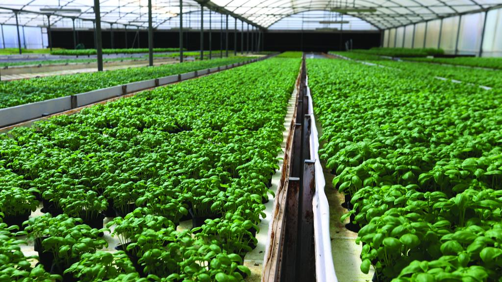
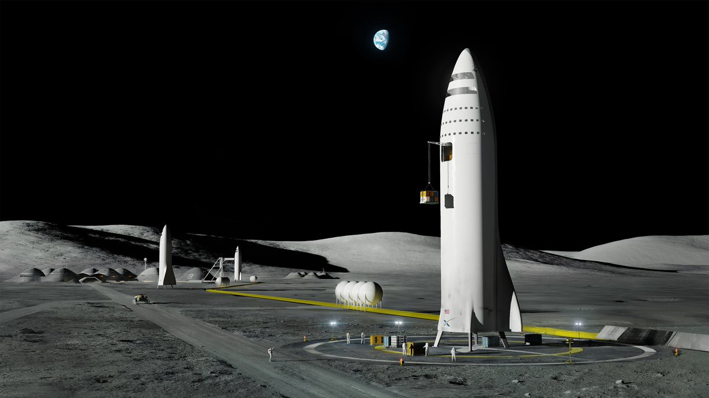

Crater Fill in
You need those crater filled in on your 5arce on moon, Look no father we are the people you need!
Rock Garden
Rock garden design may seem simple enough on the face of it, but there is a bit more to it than at first meets the eye. Disabuse yourself of the notion, right away, that it is just a matter of throwing some rocks and plants together! Consult the Q&A that follows for insights regarding selecting and arranging your material, the tools you will need, etc.
Hydroponic Garden
Hydroponics is a form of gardening that uses no soil, but instead grows plants in a solution of water and nutrients. The first step to setting up a hydroponic garden is selecting a system that best fits your needs. Important factors to consider include: how much space you have, what you want to grow, cost, and the amount of time you have to spend maintaining the system.
Landing Pad
Landing Pad is a base building product that provides a platform where starships can land and take off.
